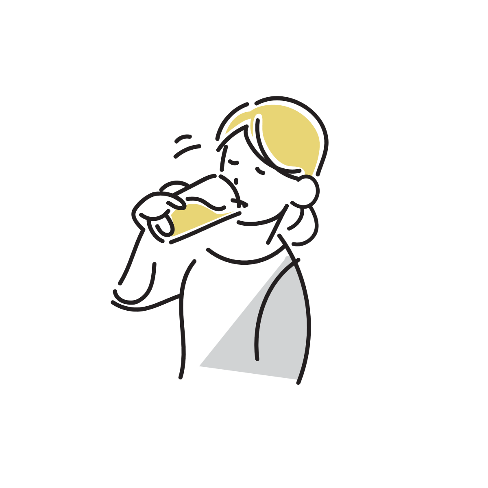
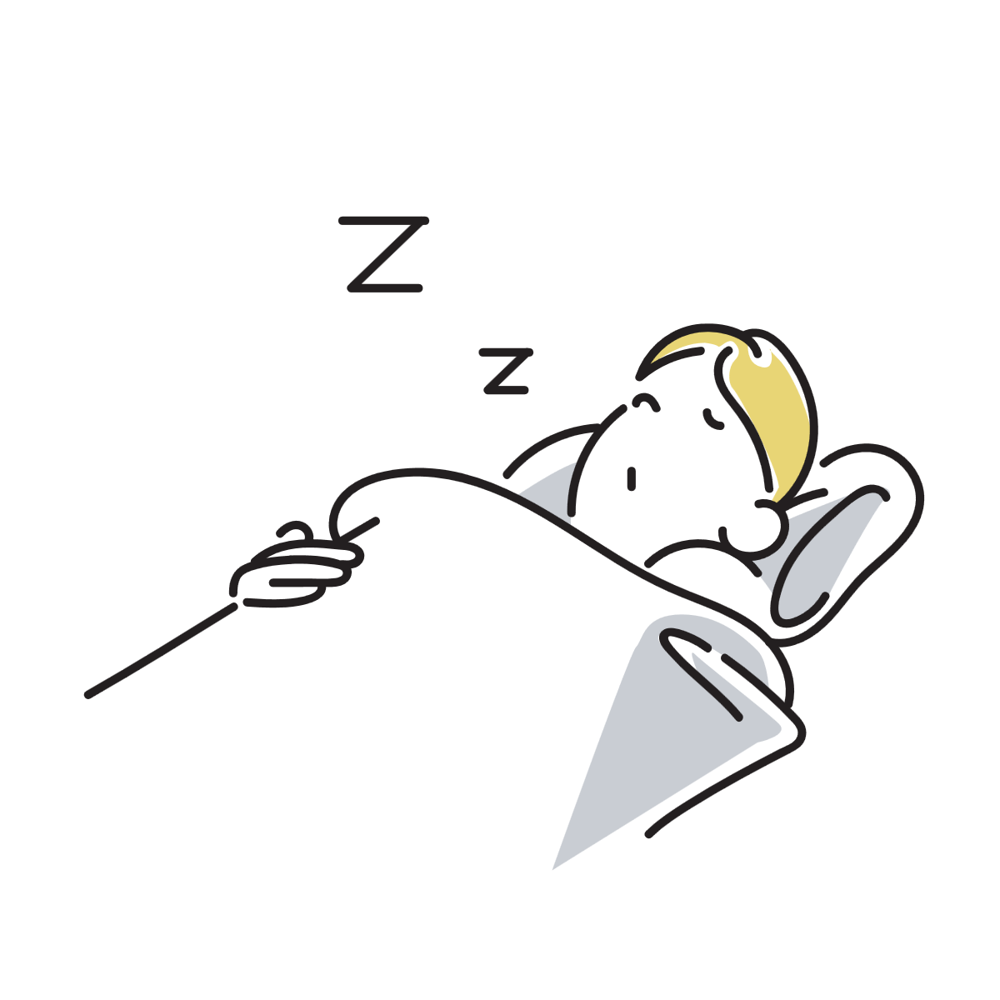
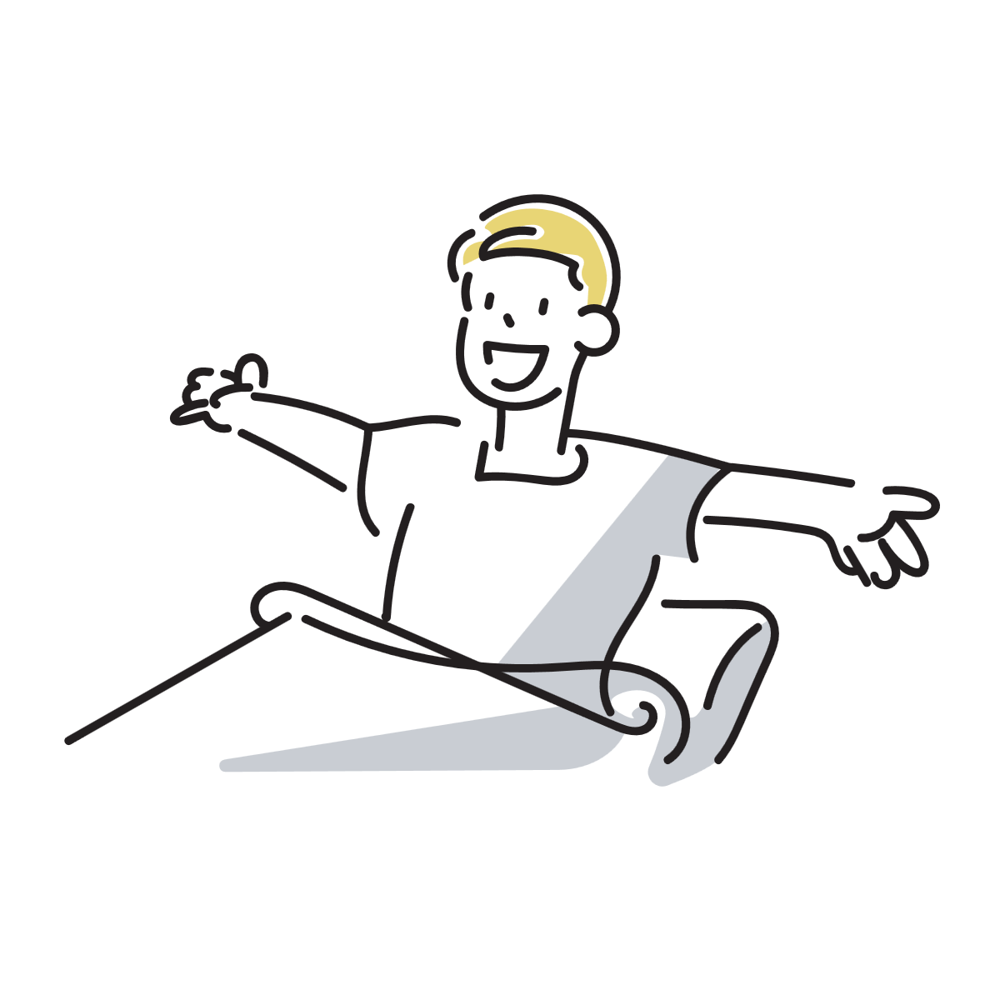
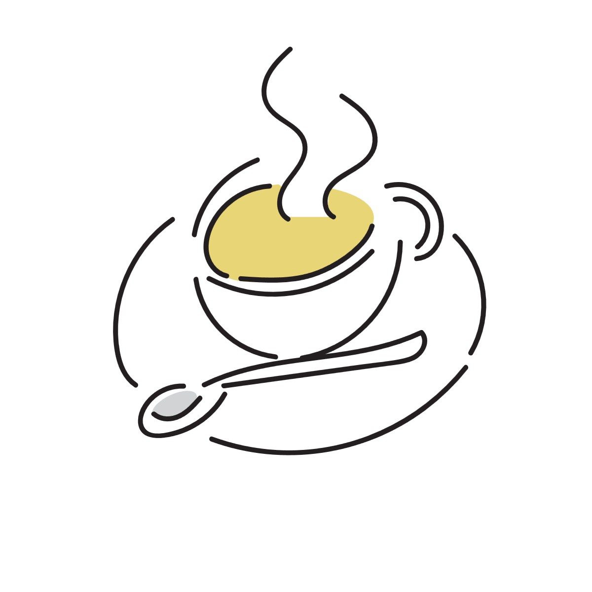

朝の水はなぜ勧められるのか
朝に起きてすぐ水を飲む習慣は、昔から健康法として知られています。 ただし、それは体を劇的に変える特別な方法というより、睡眠後の体を穏やかに整えるための小さな習慣です。

睡眠中も体は少しずつ水分を失っている
人は寝ている間も、呼吸や汗、尿の生成などによって少しずつ水分を失っています。
そのため朝の体は、前日と比べると軽い水分不足に近い状態になっています。ただしこれは病的な脱水ではなく、日常的に起こる範囲の変化です。
このわずかな変化でも、体のコンディションには影響が出ることがあります。血液中の水分バランスが少し変わることで循環の効率が低下し、ぼんやり感や軽いだるさにつながることがあります。
つまり朝の体は、「大きく崩れている」のではなく、「少しだけマイナスから始まっている」と捉えるとイメージしやすくなります。

水を飲むと体はどう変わるか
朝に水を飲むと、睡眠中に失われた水分を自然に補うことができます。体のバランスが整い、日中への切り替えがスムーズになります。
睡眠中の水分バランスを整える
水分が補われることで、血液の状態が安定し、だるさやぼんやり感が軽減されることがあります。
これは「リセット」というより、前日の状態に自然に戻していくイメージです。
血液の循環が整い、活動モードに移行しやすくなる
水分が入ることで血液の流れが安定し、体が徐々に活動モードへ切り替わります。
強い覚醒作用ではなく、自然な目覚めを助ける程度の変化です。
胃腸が動きやすくなる
胃に水分が入ることで腸の動きが促され、排便リズムが整いやすくなることがあります。
また、朝の胃腸はまだゆっくり動いているため、朝食の準備としても役立ちます。

白湯と水の違い
冷たい水と白湯のどちらが良いかはよく話題になりますが、基本的な働きに大きな差はありません。
冷たい水はすっきりとした刺激があり、寝起きのリフレッシュ感を得やすい特徴があります。一方で白湯は胃への刺激が穏やかで、体をゆっくり目覚めさせたいときに向いています。
体温や体調によって感じ方は変わるため、「どちらが正しい」というよりも、その日の状態に合わせて選ぶのが自然です。
朝のコーヒーとの違い
コーヒーは脳へ直接作用して覚醒感を高めますが、水は体内の水分バランスを整えることで間接的に目覚めやすい状態を作ります。
そのため、「すぐにシャキッとしたい」場合はコーヒー、「体を自然に整えたい」場合は水、という違いがあります。

朝の水に関する誤解
朝の水は「デトックスになる」「代謝が大きく上がる」といった説明がされることがありますが、これらはやや誇張された表現です。
解毒は主に肝臓や腎臓が常に行っている働きであり、水を飲んだから特別な変化が起こるわけではありません。
ただし、水分状態が整うことで体の働きがスムーズになるため、体感として良い変化を感じるのは自然なことです。
朝の水の飲み方
基本はコップ1杯程度で十分です。常温でも白湯でも問題ありません。
ノンカフェインのお茶でも代替可能です。
厳密に「起きてすぐ」である必要はなく、数分から10分程度の違いで効果が大きく変わることはありません。
大切なのは厳密なタイミングではなく、毎日の習慣として続くことです。
参考情報と注意点
体調や持病によって適切な水分量は異なります。気になる場合は医療機関や公的情報も参考にしてください。
関連アイテム
朝の水分補給を続けやすくするための小さな道具や飲み物を、今後ここに追加する予定です。